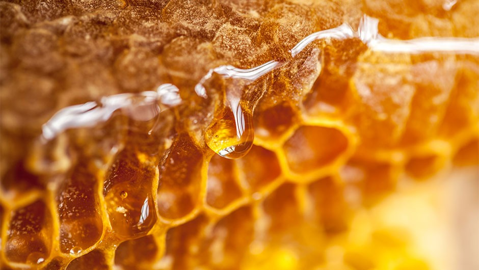

Hoe wordt honing gemaakt?
Bijen maken honing van het nectar dat ze in bloemen vinden. De
werksterbijen vliegen heen en weer van de korf naar de bloemen. Als ze
de nectar uit een bloem zuigen komt er stuifmeel op hun lijf. Wanneer ze
een andere bloem bezoeken kan dat stuifmeel de andere bloem bevruchten.
De bij zuigt nectar op in de honingmaag om het naar de korf te brengen.
In haar maag voegt ze er een stofje aan toe dat de nectar dikker maakt.
Bij de korf geeft de werkster de nectar aan een andere bij door, door
het uit te spugen. De andere bij kauwt erop en stopt de nectar in een
honingraat. Ze droogt het met haar vleugels om het nog wat dikker te
maken. Zo wordt het uiteindelijk honing. De bijen blijven heen en weer
vliegen om de honingraat te vullen. Als een cel in de raat vol is wordt
het door een bij afgedekt met bijenwas.
De imker
Iemand die bijen houdt wordt een imker genoemd. Hij draagt vaak een
masker om zich te beschermen tegen bijensteken. Sommige imkers dragen
hele pakken zodat ze niet gestoken kunnen worden. De bijen van imkers
worden in houten bijenkasten gehouden. Hier kun je gemakkelijk de
honingraten uit pakken. Als de imker honing gaat oogsten bedwelmt hij de
bijen met een beroker. Zo zullen de bijen minder snel steken. De imker
moet de raten uit de kast halen om de honing te winnen. De raten zet hij
in een apparaat dat deze rondslingert, zo komt de honing eruit en kan
het opgevangen worden. De honing wordt daarna gezeefd en moet twee dagen
rijpen voordat het in potten wordt gestopt. Als de imker honing uit de
kast heeft gehaald geeft hij de bijen er suikerwater voor terug. Dat
kunnen bijen opeten. Een goede imker haalt niet alle honing uit de raat,
maar laat genoeg over voor de bijen.
